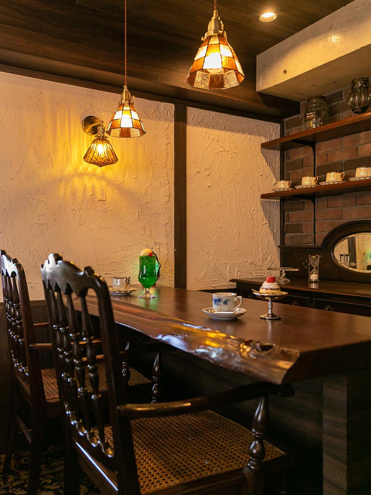
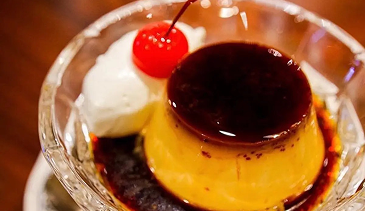
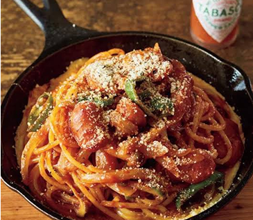

変わらない味と、変わらない時間。

喫茶SUNABAは、40年続く昔ながらの喫茶店です。
変わらないコーヒーの味と、どこか懐かしい時間。
変わらない味と、変わらない時間を楽しんでいただけます。
昔から変わらない味を大切にしてきた、喫茶SUNABAのブレンドコーヒー。 苦過ぎず、やさしいコクと香りが広がる、どこか懐かしい一杯です。 静かな時間にゆっくり味わっていただきたい、昔ながらの喫茶店のコーヒーです。
￥450

やわらかすぎない、少し固めの昔ながらのプリン。 スプーンを入れると、どこか懐かしいあの食感が戻ってきます。 コーヒーと一緒にゆっくり楽しんでほしい、喫茶SUNABAの人気メニューです。
￥500

ケチャップの香りがふわっと広がる、昔ながらのナポリタン。 どこか懐かしくて、気づけばまた食べたくなる味です。 レトロな喫茶店の定番として、長く愛され続けている一皿です。
￥750
店名：喫茶SUNABA
住所：熊本県天草市中央新町 15-7
営業時間：8:00〜18:00
定休日：日曜日・祝日